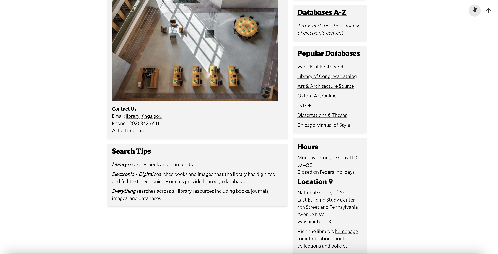

We believe that the recommended changes will further the Library's overarching mission and aims.
In this report, we analyze core features of the catalog of the Library of the National Gallery of Art (henceforth referred to in what follows as 'NGA'.)
We begin by reviewing the way that the NGA itself represents the Library. The Library opened along with the NGA itself in 1941; it grew from a small collection of books and a mission of supporting the institution's staff and occasional scholars, to becoming the heart of the Center for Advanced study in the Visual Arts, and it now characterizes its mission as that of serving as a national art research center. The Library’s collection contains more than 500.000 books and periodicals on art, history, theory, architecture, and art criticism, particularly—though not exclusively—focusing on Europe and the United States, the main foci of the NGA's collection. The NGA Library also hosts an online catalog which can be searched on site or remotely and allows users to search not only the library’s owned content but also its digital serial subscriptions, its extensive image collection, its auction catalogs, and more.
Our focus in what follows is what might be called the 'basic' search system of the NGA Library. We defer analyses of the image collections search and the auction catalogs search to future work, although we suspect that certain of our findings will apply to these search systems as well. Throughout our report, we draw on Nielsen's heuristics, although for the purposes of this report, we emphasize instances of violations of those heuristics rather than conducting a thoroughgoing study in accordance with them. The body of our report consists of five sections:
In the final section of the report, we advance recommendations for changes to the National Gallery of Art Library search system based on the results of the analysis that we have undertaken.
In this section of the report, we analyze the NGA Library's search system, focusing on basic and advanced searches, and highlight issues that we think merit further consideration.
Our starting point is the library's main search page.

As noted above, there are multiple search functions on the NGA Library page: our focus is on the 'simple' and 'advanced' search functions. However, before we turn to those search functions, we wish to note that there are three main options for searches: searches can either be limited to the library, to electronic and digital resources, or to everything, as manifest in the dropdown menu on the screenshot below.
However, these options are explained only, as it were, below the fold on the search page, so they are not immediately apparent, unless one has worked through the entirety the Library's main search page, and we are inclined to suspect that most users will not do so.
Let's now consider the simple search function. Here we begin a search intended for 'Candida Höfer': as can be seen, after typing 'Candida', a number of suggestions appear. The first suggestions concern whether the search will be limited to the library, electronic and digital resources, or everything; further suggestions concern the continuation of 'Candida' and the specific kind of information sought. Note that unless one was antecedently aware of the various search options, one might well be at a loss here. This seems to violate both Nielsen heuristic #4 (consistency and standards) and #6 (recognition vs. recall).

We now turn to the advanced search function. It is implicitly set up for Boolean searching, although it is left to the user to infer that from the structure of the search box. Here again, Nielsen heuristics #4 and #6 seem to be violated.

It's worth contrasting the minimal help information on offer in the NGA search page with the CUA library catalog, which, like the NGA catalog, uses the Primo Ex Libris VE system. The CUA catalog offers explanations both of what the searchbox is and how it works, as well as search tips that go beyond Boolean functions. (The two screenshots that follow illustrate each point in turn.)
This contrast brings us to what we take to be one of the deepest problems with the NGA Library search system: it provides next to no help and documentation, thereby running afoul of Nielsen heuristic #10), so the user is left to infer how to use the system. While one might object that this is not a problem, given that the intended users of the NGA Library search system are curators and scholars, this assumption, is, we think, misplaced. As Bates (2017) observes: "As a rule, people—including Ph.D. scholars—develop what search skills they have incidentally to their primary efforts at research or problem-solving and often fail to develop a conscious repertoire of search skills and techniques to help them over difficult stages.” It should therefore not be assumed that any of the intended users of the NGA Library search system havedeveloped these skills (p. 2080).
Our aim in what follows is to advance our recommendations for changes to the NGA Library search system on the basis of the preceding analysis.
We believe that the recommended changes will further the Library's overarching mission and aims.